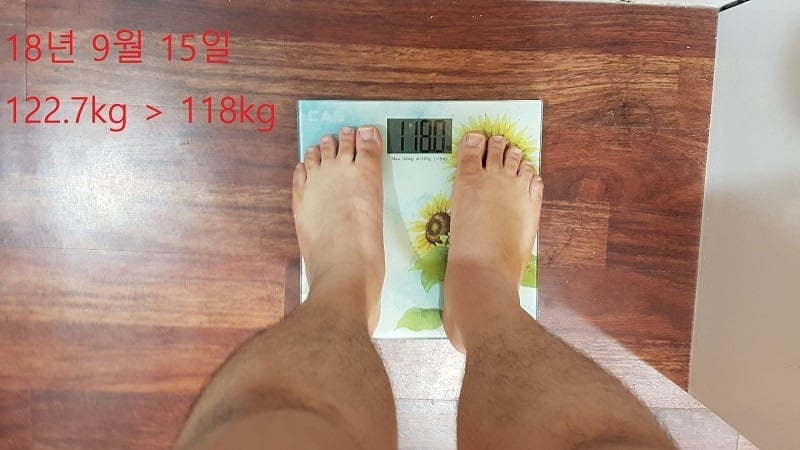
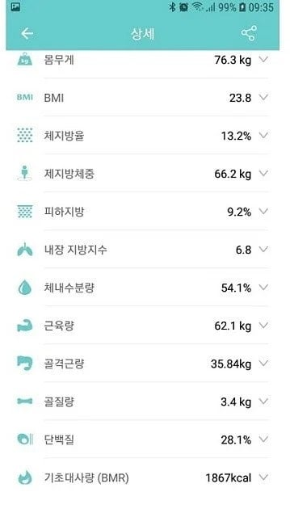
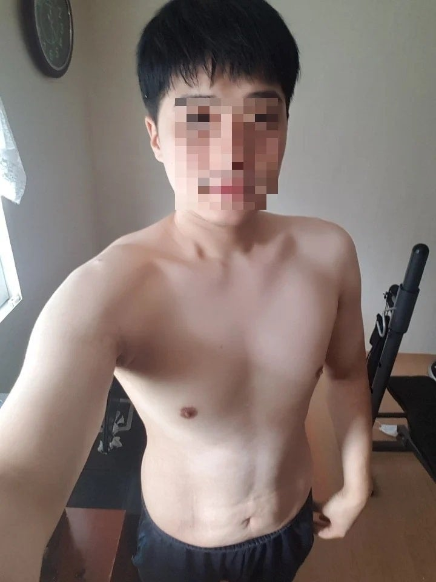
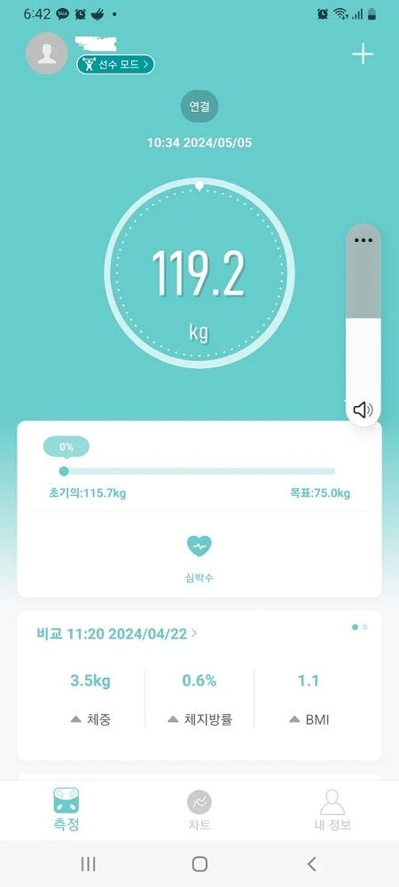
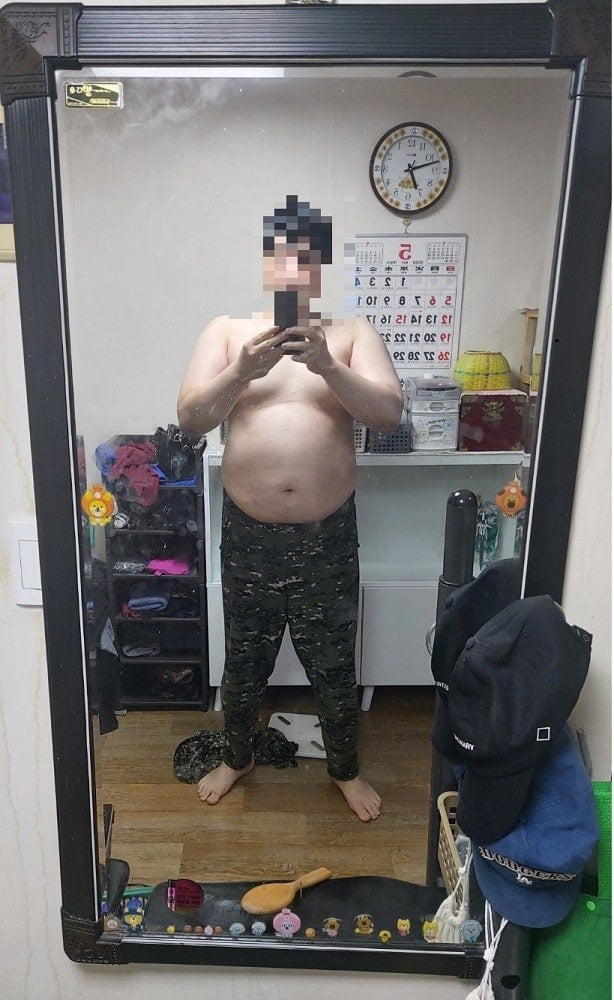
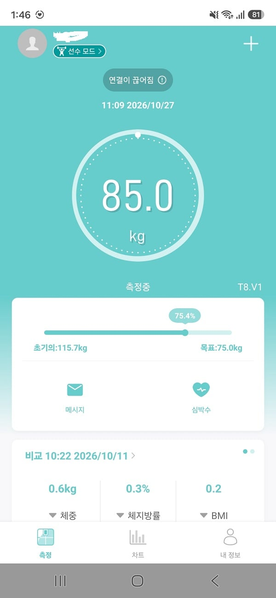

이상태로 유지 할줄 알았음


몸 복구 시킴 ㅠ......

다시 재 다이어트 중
잘자기... 스트레스 관리 식습관?? 말이야 쉽지..
쉽지 않다고 시발!!! 인생은 파란만장 하다고 ㅠㅠ
46키로 감량후에 계속 그렇게 살줄 알았음..
눈떠보니 낯선 천장을 바라본 사고난후에.. 고삐 풀리고 쉽지 않더라



이상태로 유지 할줄 알았음


몸 복구 시킴 ㅠ......

다시 재 다이어트 중
잘자기... 스트레스 관리 식습관?? 말이야 쉽지..
쉽지 않다고 시발!!! 인생은 파란만장 하다고 ㅠㅠ
46키로 감량후에 계속 그렇게 살줄 알았음..
눈떠보니 낯선 천장을 바라본 사고난후에.. 고삐 풀리고 쉽지 않더라
대단하다 너
나도 다이어트 여러번 했는데 젊은때는 운동도 쉽고 살도 쫙쫙 빠지는데 나이먹으니 운동도 힘들고 살도 잘 안빠지고 ㅠㅠ 그냥 위고비 맞고 편하게 살까 고민중
내가 이렇게 뺏다 쪗다 하다
요요와서 135찍음
지금부터 좀 싼거
국내꺼 가볍게 맞으면서 하셈..
위고비 놔두고 왜 쓰래기같은 에페를 추천함? ㅋㅋㅋㅋㅋㅋ
차라리 무안단물을 추천함 ㅋㅋ
갑자기 에페를 추천한다고?
나랑 키 똑같네 75유진데 40키로 찌면 저렇게된다는거지?
1년 빠짝 빼서 인간형되었었다가
올초부터 야근 이빠이 하니깐 거의 복구 되기 직전임.
지방축적량은 이미 어릴때 정해져있고 나이가 어릴땐 대사 소모가 굉장히 활발함 그래서 많이 쳐묵하고 움직이고 활동하고 밤도새고 다 해도 큰 문제가없음 나이가 들면 대사의소비량 호르몬의 변화 스트레스 수면시간 다양한게 악화됨 그래서 운동 식이 빡쌔게 해도 잘안빠짐 그리해도 유지도 간신히하고
다이어트 주사가 호르몬을 착각하게 만들어 빼도 약을 끊어도 다시 원복되는 이유임
결국 우리는 현실적으로 유지 가능한 식이와 운동을 해야함
우리몸은 원시시대에서 진화를 멈췄으니까
원시시대에서 진화를 멈췄다기 보다 진화하기에 아직 충분한 시간이 안 지난거지 뭐
어쩌면 지났을지도 모름 쯔양같은 사람들이 신 인류 일지도 모름 몸에서 먹은걸 축적을 잘 안하잔어 ㅋㅋㅋ
아구통 선생님 말씀이 '현실적으로 유지 간으한 식이와 운동은 없다' 임
어차피 몸이 적응함
그 선생님 말씀도 봤는데 동의는 하는데 그분은 의사니까 돈이 억수로 많으니까 주사 값이 감당되는거지
본인도 주사값좀 나간다고 말하는거보면 그래도 내가 고기나 좋아하는 음식을 포기 못하니까 난 돈으로 눌러버린다~
느낌이 강하더라 약이 몸에 잘맞고 매번 사다 할 수 있는 재력의 사람이라면 그렇게 하는게 맞는데 현실은 목표 체중까지 빼고 유지해보려고 노력은 해야하잔아?
그래서 어떤 의사 말로는 우리 몸이 체중이 돌아갈려는 관성이 약해질 만큼 주사 약을 해서 빼고 그시점부터 관리를 해야한다고 하더라 물론 그 관리라는게 빡쌔게하는 관리를 말하는건지 적당히 운동도하고 적당히 즐길거 즐기면서 하는건진 모르겠다만 적어도 일리 있는 말이긴했었음 몸이 살을 뺀 체중에 적응을 시키는 기간이 필요하다는건 주사약 이전에도 어느정도 증명된바가 있으니까
ㅈㄴ띄엄띄엄보셨네
돈으로 누른다가아니고
고도,초고도비만인데 안맞으면 50대쯤 뒤지니까 맞으시는게 좋다가 주요 주장임
비만인상태유지하는게 방사능피폭되고있는상황이랑 같다고 비유하심
고도,초고도비만들은 약을 끊으면 무조건 요요가 온다 생활습관개선 운동으로 유지하기 힘들다는 말을 항상하심 다시 영상을 제대로 보고 오시길바람
ㄴㄴ 자기는 좋아하는 음식 절대 그거 못끊겠어서 그냥 주사 맞을거라고 확실히 말하셨습니다. ㅋㅋㅋ
물론 예능인지라 농담도 조금 섞어서 말한거겠지만은 결론은 약 끊으면 돌아오니까 뭐
하도 방송 나오시는데가 많아서 님이 본거랑 내가 본거랑 다른걸수도있는데 취지는 이미 이해했습니다
당연히 고도 초고도비만은 맞아야지 그건 당연한거임 그리고 제약사도 요요 온다는거 명확히 알려줌 다만 요요가 와도 어느정도 자기가 관리한다는 가정하에 원래의 70~80%까지 돌아온다는게 명확하게 밝혀진 상태임
내말은 이제 저분 말도 일리 충분히 일리 있는 말이고 다른 의사들도 첨언한게 밑에 말임
공통적으로 하는말은 "고도 초고도 비만은 무조건 약 꼽아라" 이거고 그게 돈벌려고 하는 소리든 아니든간에 효과는 명확하게 있으니까 딱히 따질 이유는 없다고 보고
약을 계속하든 끊고 뒷 관리 문제에서 부분은 갈린다고 생각함
취지를 이해 하셨으면 말을 그렇게 하면 안 되는거 잖음 ㅋㅋ
난 돈 많은 의사니까 약 꼽으면 그만이야로 글을 쓰면 어떡함? ㅈㄴ쿨한척하시네
그리고 고도 초고도비만은 세트포인트 리셋이 안 된다니까요? 약 끊는 순간 바로 리셋임 약없이 생활습관개선 및 식단 운동으로는 유지가 힘들다고 하는거임
애초에 아구통돌린다는소리가 bmi 정상범위인 사람들이 마운자로 꽂고 부작용심하니 뭐니 해서 한소리라고
의사가 돈 많은건 사실이고... 뭐.... 아닌가??? 돈이 없으셔? 그럼 내가 잘못 말한건가????? 그럼 미안
그런데 내가 언제 세트포인트 리셋이 된다고 함?
아니 니말대로면 약 꼽을 돈 없으면 고도 초고도 비만은 나가 뒤지라는 뜻인데? 계속 꼽을 돈을 어디서 구해?
보통은 목표 체중치까지 빼고 관리하자는 쪽이 많을텐데 어쩌라는건데 그럼 니가 돈 줄거임? ㅋㅋㅋ
ㅋㅋ말투 시벌
유체이탈화법하고 쳐비꼬고 그럼 미안?
쿨몽둥이로 줘패고싶네
걍 입열지말고 꺼지쇼
어쩌라는건데 웃긴놈이네 이상한거에 핀트꼽혀가지고 시비털고 다니지 말아라 왜그러냐 대체 ㅋㅋㅋㅋ
내가 니 욕이라도 함? 기분 나쁠것도 없는데 왜 싸우고싶어서 안달이냐
돈으로눌러버린다 x
'어차피 식단 해 봐야 의미없다. 몸은 원래대로 회귀하려는 성질이 강한데 이걸 저항할 수 없다. 저항하지 말고 약 맞으면 자연스레 준다' 가 맞음. 그래서 약 먹으면서 먹고싶은건 먹는다고 했음. 그래도 양이 줄어서 자연스레 빠짐
대신에 자기는 배고플때만 먹는다고도 했음. 헛배고픔이나 입이 심심해서 먹는 그런건 절대 하면 안된다까지 말 함.
그리고 실제 데이터를 들고옴.
'현실은 목표 체중까지 빼고 유지해보려고 노력' 과 '약 맞으면서 식이 유지한 그룹' 비교 데이터까지 들고와서 소개 함
당장은? 되지 의지가 있으니까. 근데 2년 3년 추적 연구 결과 전자는 목표 체중으로 돌아옴. 감량해서 유지하는 비율? 1%정도임.
체중이 돌아갈려는 관성이 약해질 만큼 주사 약을 해서 빼고' 가 !최소! 1년임.
당연히 술담배끊고영양소다챙기고제때운동하고제시간에충분히자면 건강한거 누구나 다 아는 사실임.
네가 두번째 문단에 말한 그 의사도 데이터 가지고 얘기한거 아니면 그런 류 라고 흘려들어야지.
데이터 가지고 얘기하는데 데이터 없이 '그렇다던데?' 라고 하면 아무도 안들음
몸이 살을 뺀 체중에 적응을 시키는 기간이 필요하다는건 주사약 이전에도 어느정도 증명된바가 있으니까 <- 단기간 데이터는 있음. 다이어트약이 처음도 아니고 ㅇㅇ 장기간 데이터는 없을 뿐. 왜냐면 대부분 다 돌아가서.....
그리고 니 원댓글 맞는 말이었지. 한 10년전까진?
근데 다시 연구를 하니 (신규 다이어트약 임상 등) 그게 아니었을 뿐. 이번기회에 다시 입력해서 바꿔두면 됨 ㅋㅋ
1. 아구창 의사님이 틀렸다고하는 말 한적 없음
2. 돈으로 누른다 는 말 하신적 없음 "느낌" 이라고 적어둔건 안보이고 의사선생님이 그렇게 말했다로 보이나 보구나?
그래 뭐 내가 잘못썼네 그래 미안하다
3. 노오력으로 안된다는거 알고있고 내 어떠한 댓글로 그렇게 하라고 한적이 없음 그게 맞다고 한적도없고
4. 뺀 몸무게 유지비율 적다는거 위에 적어놨음
5. 데이터를 내가 가질 필요가 있나 어짜피 너나 나나 지금 같은 이야기 하고 있는거임 ㅋㅋ
6. 적응 시키는 기간이 굉장히 길게 필요하대 그게 그냥 일반 다이어트로 뺀걸 말하는게 아니라 실제 마운자로나 위고비 이런거 처방해주는 의사가 자기가 경험상 그렇다고함 의사 샘 이름이라도 알려줘? 의사가 그렇다는데 데이터를 내놓으라고 하면 나한테 어찌하겠음 그 의사왈 "주사를 한번 시작하면 증량을 꾸준히해서 BMI 지수 영끌해서 25까지 내리고 거기서 몸 관리하면 그래도 원래대로 되돌아갈려는게 덜하다(안돌아간다가 아니라 덜하다~) 그리고 그정도 면 몸이 굉장히 가벼워진 상태일거니까 스스로도 관리하기 수월하다~" 이거였음
7. 내 원댓에 있는건 양쪽다 현재 진행형이고 둘다 주사약 꼽는 상황을 말하는거임
반박을 하고싶어서 반박할거리를 만들어 내는건지 모르겠는데 지금 너나 나나 같은 이야기하고 있는거임
단지 나는 의사를 두명에 의견을 붙인거고 뭐 아구창 의사님을 신봉해서 그분에게 조금이라도 안좋소리같아보이면 득달같이 달려들어서 소멸 시켜야한다는 사명감으로 이러는거면 의미가 없다 나도 그분 존경하고 맞다고 생각함
그런데 누군가는 살 존나 뺀다음에도 그 주사 이어가지 못할 사람들이 있다는것도 명확한 사실이고 한두푼하는것도 아니고 가능성이 높은 방법이 있다길래 적어준거고 그뿐임 의사 이름 알려줘? 나랑은 일면식도 없는 유튜브에 나온 의사고 그사람도 주사 신봉자라고 하면 신봉자 이심 되려 아구창 의사님보다 더 한거같어 단계별로해서 최대 10MG까지 올려도 문제없다고 할정도니까ㅋ
인간이 자연스럽게 유지할수 있는 감량선이 15kg정도라더라, 그 이상은 의지가 정말 많이 필요하다고함.
탈모 조심해라 10 이상 빼는 사람들은 진짜 탈모 무조건 조심해라
월~ 금은 식단
토일은 운동
이렇게 유지중임.
유지하는게 진짜 말이안되게 어렵긴해
80kg로 뺀다한들 주위에 태어나길 80으로 태어난사람이랑 똑같이 먹으면 살이찜
회사 마른애 하나 식습관이 정말 최악임
힘도없고 근육도 없음
밥은 새모이만큼 먹고 카페가서 과당크림제조음료 드링킹하고
근무내내 몰티져스 같은거 초 고칼로리 먹음
그 무엇하나 내가 하면 저러니까 찌지.. 소리가 절로 나올 식습관 밖에 없음
그래도 빼짝 말랏으니 걘 자기관리 잘된거임.
유전적 소인으로 저혈압 고지혈증 잇다는데 일단 말라서 관리잘된거임
난... 음.. 운동하고 식이하고 액상과당 정제당 단순당 끊고 술이나 야식 외식도 거의 안하고...
위장약해서 맵고짜고 기름진거 못먹고 생양배추 드레싱없이 먹는데...
맨날 80이나 90을 자꾸 넘길려함.. ㅋㅋㅋㅋ
뭐 이렇게 먹고 운동하고 하니 성인병예후 같은건 하나도 없고 그냥 단순 살만 찐 상태고..
그조차도 근육량 빵빵인데 난 조금만 먹는거 흐트러져두 북북 찜.
나도 ㅠㅠ 친구랑 같이살때 삼시세끼를 똑같이 먹고 똑같이 움직였는데 난 아침 저녁거르고 점심만 먹고 내친구는 세끼다 먹고 간식먹고 저녁에 라면먹어도 나랑 몸무게 똑같았음..... 지금도 그친구는 말랐고 난 다리다쳐서 다이어트 반년 쉬었더니 북북쪄서 돼지됨 ㅠㅠ..
24년 2월 103kg
24년 9월 79kg
현재 84kg
나도 조금 더 내려가고싶은데, 힘내자 개붕아!
에페라도 맞아라..
너 왜 맹물을 몇십 주고 맞으라함?
나디 매일 체중 잼
가끔 폭식하면 저녁만 먹음 ㅜ
3년 유지중
아구통 선세 말이 맞다니까
한번 올라간 기준점은 안내려와
애초에 식탐있는 사람은 약쟁이들이 마약참는거마냥 참는거라 힘들지
유지가능하냐 이게문제
식탐 개쩔어도 3년 유지 잘하고있는데 사고나서 몸 유지보수는 어쩔수없지
남자답고 듬직하구만!
다이어트한다고 적게 먹다 보니까 확실히 예전에 비해 먹는 양이 예전보다 줄긴하던데.
그래도 그 준 양으로 먹으면 살은 찌더라.ㅋ
나도한 20키로 뺐는데 퇴사하고 원상복구함ㅋㅋ
저정도 의지면 일단 위고비로 적정체중 맞추고 유지는 철저하게 할거같음
개쩌노
오토바이탐?
나도 20대 초반에 50키로 빼고 정상+근육으로 몸 만들었는데
8년간 조금씩 찌면서 몸무게 되돌아옴
항상 나는 할 수 있다는 생각에 별 신경 안썼고
이제 빼야겠다 싶어서 다시 빼려고 했는데 안빠짐
직장도 다녀야 하고 시간을 20대 초반 처럼 쓸수도 없고 의지도 많이 떨어짐
그래서 계속 유지하다가 위고비 5개월 마운자로 8개월차에 30키로 정도 빠짐
아구통 교수 말이 맞다는거 다시 느낌
쫙뺏을때 살아있네ㅋㅋ
정상임
한 번 살 뺀다고 그거 유지하려면 인생 내내 다이어트임.
넌 마운자로 맞아라 죽빵의사가 항상 이야기하지 않았니
평생 쪘다 빠졌다 반복하기보다 주사맞고 건강한 삶 사는게 훨 나아보임
존나 싸고 맛있고 양많고 배부르지만 칼로리 존나 낮은 어떤 작물이 나오지 않는 이상 힘들것 같음
아구통 센세...